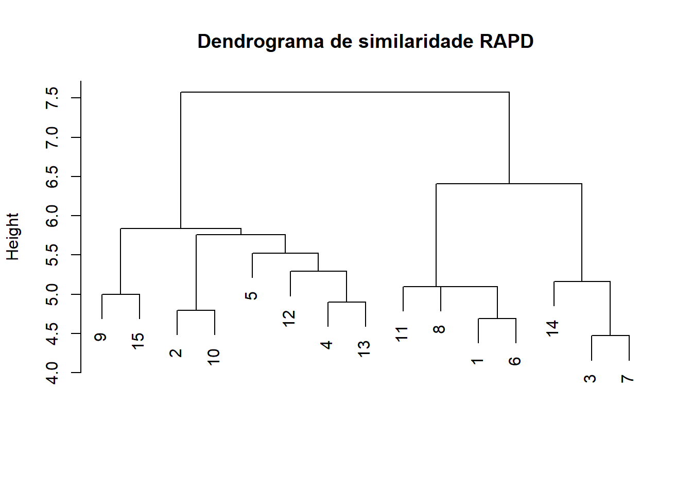
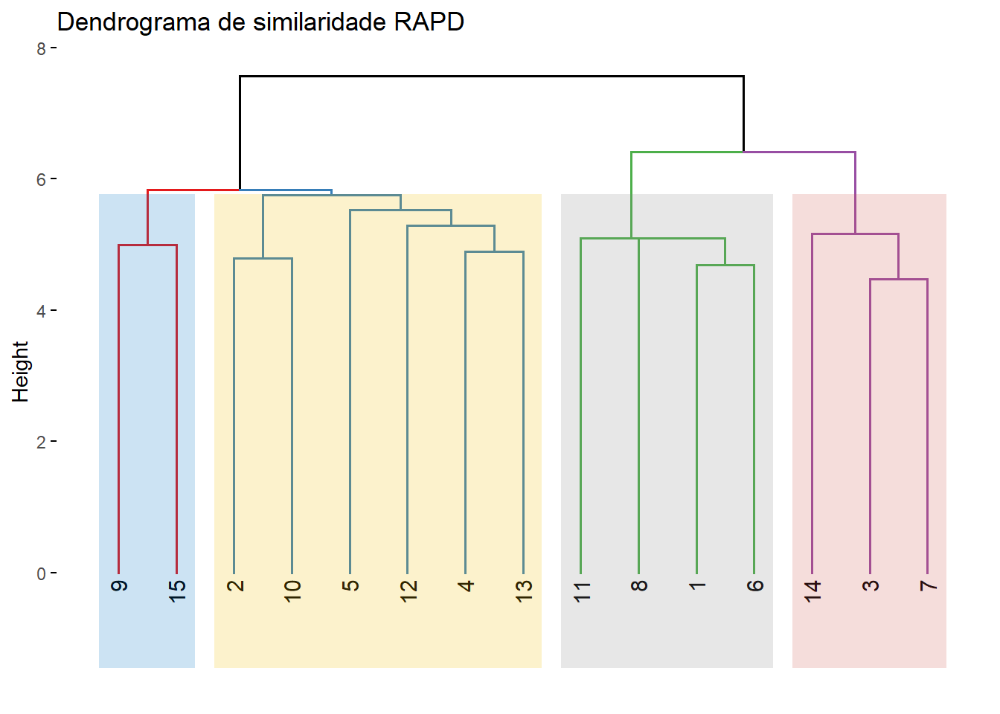
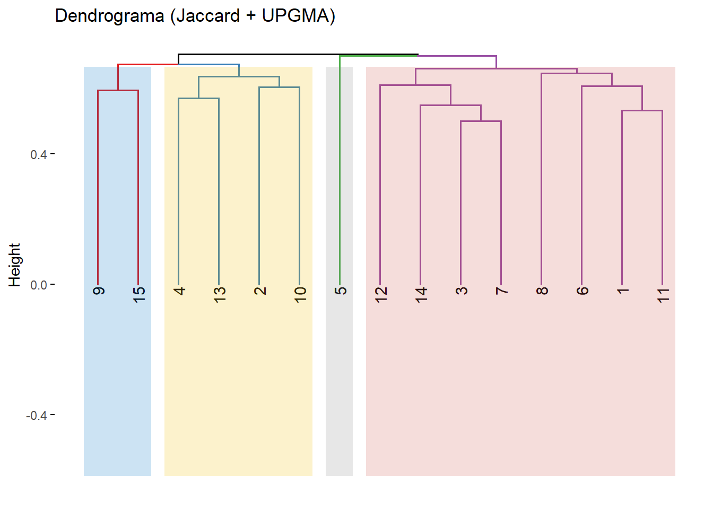
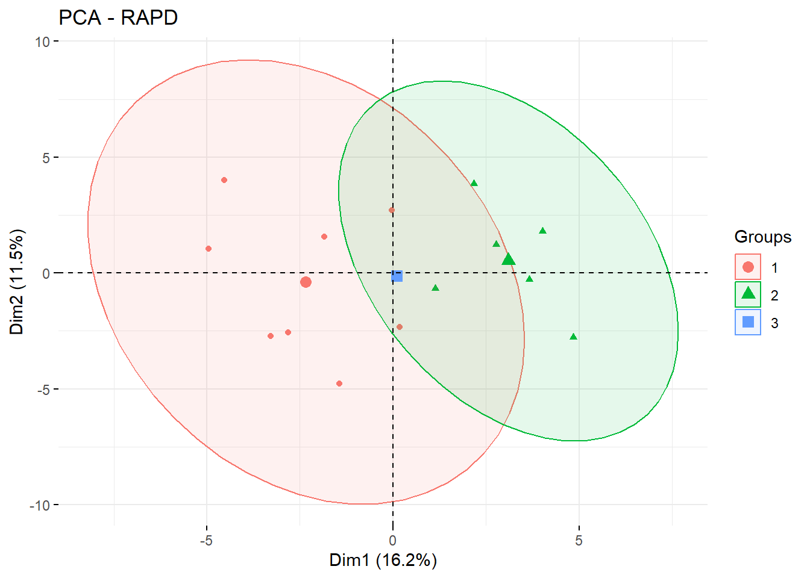
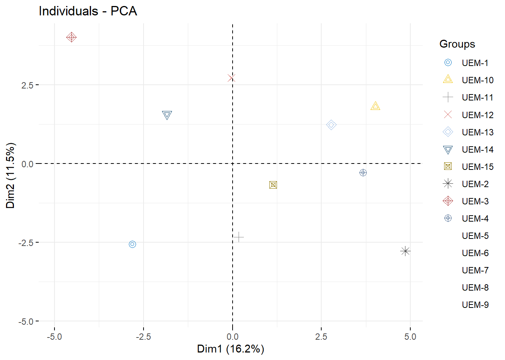
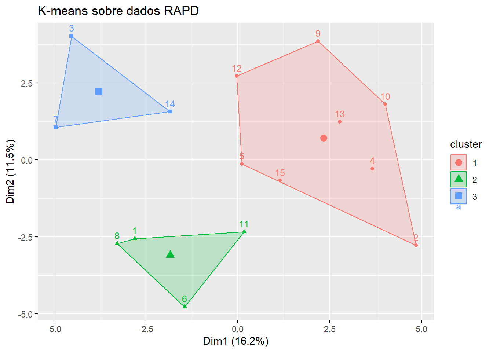
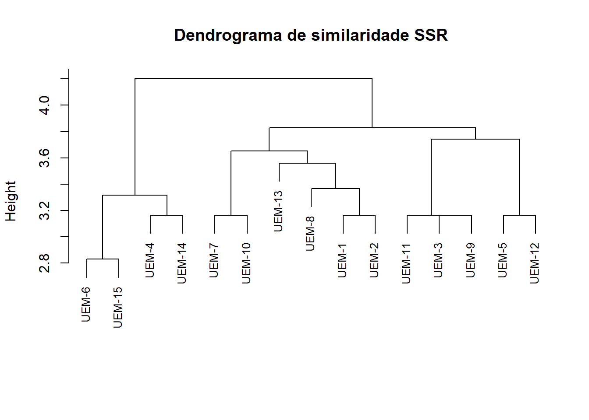
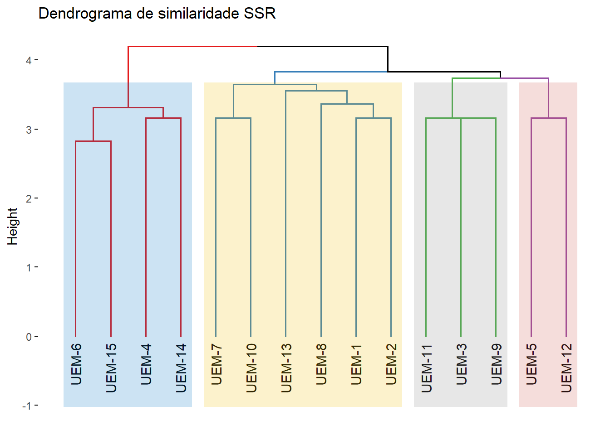

options(repos = c(CRAN = "https://cran.r-project.org"))
install.packages(c("readxl", "dplyr", "tidyverse","adegenet", "vegan", "cluster", "factoextra", "ape"))Avaliação da diversidade genética em 15 acessos por meio de marcadores moleculares do tipo SSR (microssatélites) e RAPD
Disciplina: DAG4497 – Biotecnologia Aplicada ao Melhoramento de Plantas, ministrada pela Profa. Dra. Adriana Gonela.
Elaborado por Helio de Souza Junior, com RStudio usando Rmarkdown e Quarto. Código disponível no GitHub.
Instalar pacotes
Carregar pacotes
library(readxl)
library(dplyr)
library(tidyverse)
library(adegenet)
library(ape)
library(vegan) # Para distância de Jaccard
library(cluster) # Para clustering
library(factoextra) # Para visualização do dendrograma1. Leitura dos dados RAPD
RAPD <- read_excel("C:/Git/EstDocenciaUEM/AULA - PRATICA/RAPD.xlsx", sheet = "RAPD")head(RAPD)# A tibble: 6 × 61
...1 `500 pb...2` `600 pb...3` `700 pb...4` `800 pb...5` `900 pb...6`
<chr> <dbl> <dbl> <dbl> <dbl> <dbl>
1 UEM-1 0 1 1 0 0
2 UEM-2 0 1 0 1 0
3 UEM-3 1 0 1 1 1
4 UEM-4 1 0 1 0 0
5 UEM-5 0 0 1 0 0
6 UEM-6 0 1 0 0 0
# ℹ 55 more variables: `1000 pb...7` <dbl>, `1100 pb...8` <dbl>,
# `1200 pb...9` <dbl>, `1300 pb...10` <dbl>, `1400 pb...11` <dbl>,
# `500 pb...12` <dbl>, `600 pb...13` <dbl>, `700 pb...14` <dbl>,
# `800 pb...15` <dbl>, `900 pb...16` <dbl>, `1000 pb...17` <dbl>,
# `1100 pb...18` <dbl>, `1200 pb...19` <dbl>, `1300 pb...20` <dbl>,
# `1400 pb...21` <dbl>, `500 pb...22` <dbl>, `600 pb...23` <dbl>,
# `700 pb...24` <dbl>, `800 pb...25` <dbl>, `900 pb...26` <dbl>, …dados1 <- RAPD |> rename(individuo = 1)2. Separar identificadores e matriz binária
matriz_binaria <- dados1 |> select(-individuo)
nomes <- dados1$individuo3. Calcular matriz de distância (Jaccard)
dist_jaccard <- vegdist(matriz_binaria, method = "jaccard")4. Agrupamento hierárquico (método UPGMA)
cluster <- hclust(dist_jaccard, method = "average")5. Dendrograma (agrupamento hierárquico)
# Mostra similaridade entre indivíduos.
dist_mat <- dist(matriz_binaria)
hc1 <- hclust(dist_mat, method = "ward.D2")
plot(hc1, main = "Dendrograma de similaridade RAPD", xlab = "", sub = "")
fviz_dend(hc1,
cex = 0.8, # Tamanho da fonte
k = 4, # Número de grupos (opcional)
k_colors = c("#E41A1C", "#377EB8", "#4DAF4A", "#984EA3"), # Cores para os grupos
label_cols = "black",
rect = TRUE, # Mostrar retângulos nos grupos
rect_fill = TRUE,
rect_border = "jco", # Cor das bordas
main = "Dendrograma de similaridade RAPD")Registered S3 method overwritten by 'dendextend':
method from
rev.hclust veganWarning: The `<scale>` argument of `guides()` cannot be `FALSE`. Use "none" instead as
of ggplot2 3.3.4.
ℹ The deprecated feature was likely used in the factoextra package.
Please report the issue at <https://github.com/kassambara/factoextra/issues>.
5.1. Dendrograma com rótulos dos indivíduos coloridos
fviz_dend(cluster,
k = 4, # Número de grupos (ajuste conforme necessário)
k_colors = c("#E41A1C", "#377EB8", "#4DAF4A", "#984EA3"), # Cores para os grupos
label_cols = "black",
rect = TRUE,
rect_border = "jco",
rect_fill = TRUE,
main = "Dendrograma (Jaccard + UPGMA)",
cex = 0.8)
6. Análise de Componentes Principais (PCA)
# Padronizar a matriz binária (opcional)
pca <- prcomp(matriz_binaria, center = TRUE, scale. = TRUE)
# Plotar a PCA com nomes dos indivíduos
fviz_pca_ind(pca,
label = "none", # ou "all" para mostrar nomes
habillage = cutree(cluster, k = 3), # colorir por grupo do dendrograma
addEllipses = TRUE,
title = "PCA - RAPD")Too few points to calculate an ellipse
6.1. PCA (Análise de Componentes Principais)
# PCA (Análise de Componentes Principais)
# Para visualizar agrupamentos dos indivíduos.
pca <- prcomp(matriz_binaria, scale. = TRUE)
fviz_pca_ind(pca, geom = "point", habillage = dados1$individuo, palette = "jco")
7. Agrupamento com k-means (alternativa ao dendrograma)
set.seed(123) # Para reprodutibilidade
km <- kmeans(matriz_binaria, centers = 3, nstart = 25)
# Visualizar os clusters na PCA
fviz_cluster(km, data = matriz_binaria,
labelsize = 10,
main = "K-means sobre dados RAPD")
8. Salvar gráficos
ggsave("pca_rapd.png", width = 6, height = 5, dpi = 300)2. Leitura dos dados SSR
SSR <- read_excel("C:/Git/EstDocenciaUEM/AULA - PRATICA/SSR.xlsx", sheet = "SSR") # substitua pelo caminho correto se necessárioNew names:
• `` -> `...1`2. Visualização dos dados SSR
head(SSR)# A tibble: 6 × 7
...1 SSR1 SSR2 SSR3 SSR4 SSR5 SSR6
<chr> <dbl> <dbl> <dbl> <dbl> <dbl> <dbl>
1 UEM-1 13 15 13 16 11 11
2 UEM-2 45 22 15 14 16 11
3 UEM-3 35 44 25 25 26 24
4 UEM-4 25 56 33 33 36 34
5 UEM-5 75 36 44 55 54 47
6 UEM-6 25 47 55 51 42 46# Converter para formato genind (pacote adegenet/poppr)
# Supondo que a primeira coluna é o nome da amostra
dados_genind <- df2genind(SSR[,-1], ploidy=2, sep="/", ind.names=SSR[[1]])4. Calcular matriz de distância (Nei)
# Distância genética (ex: distância de Nei)
dist_matrix <- dist(dados_genind, method = "euclidean") 5. Dendrograma com rótulos dos indivíduos
hc2 <- hclust(dist_matrix, method = "ward.D2")
plot(hc2, main="Dendrograma de similaridade SSR", xlab="", sub="", cex=0.8)
fviz_dend(hc2,
cex = 0.8, # Tamanho da fonte
k = 4, # Número de grupos (opcional)
k_colors = c("#E41A1C", "#377EB8", "#4DAF4A", "#984EA3"), # Cores para os grupos
label_cols = "black",
rect = TRUE, # Mostrar retângulos nos grupos
rect_fill = TRUE,
rect_border = "jco", # Cor das bordas
main = "Dendrograma de similaridade SSR")